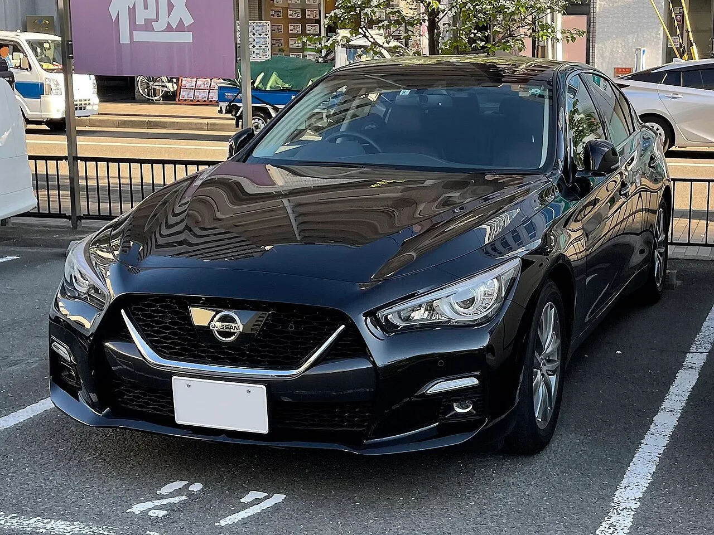
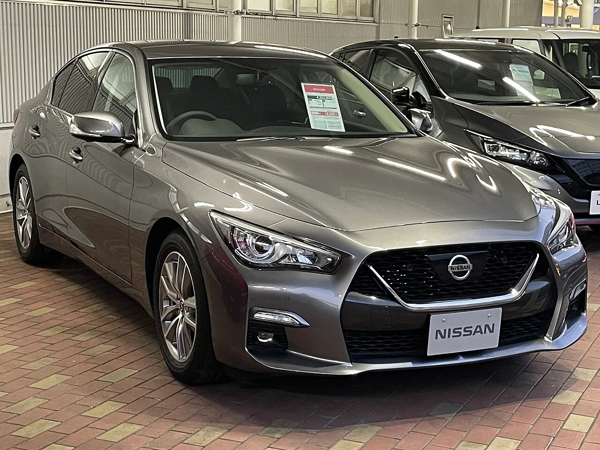
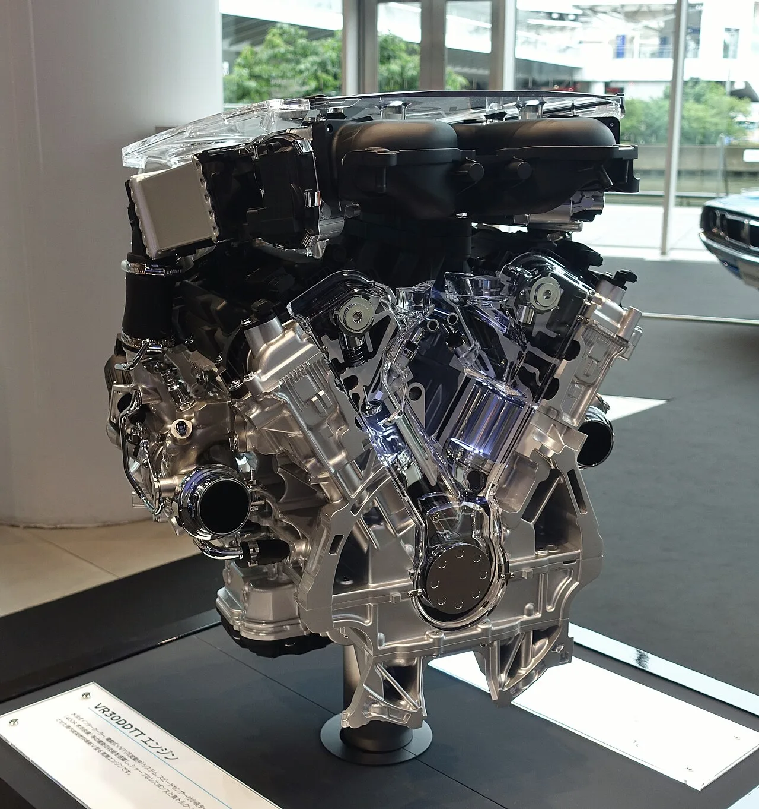
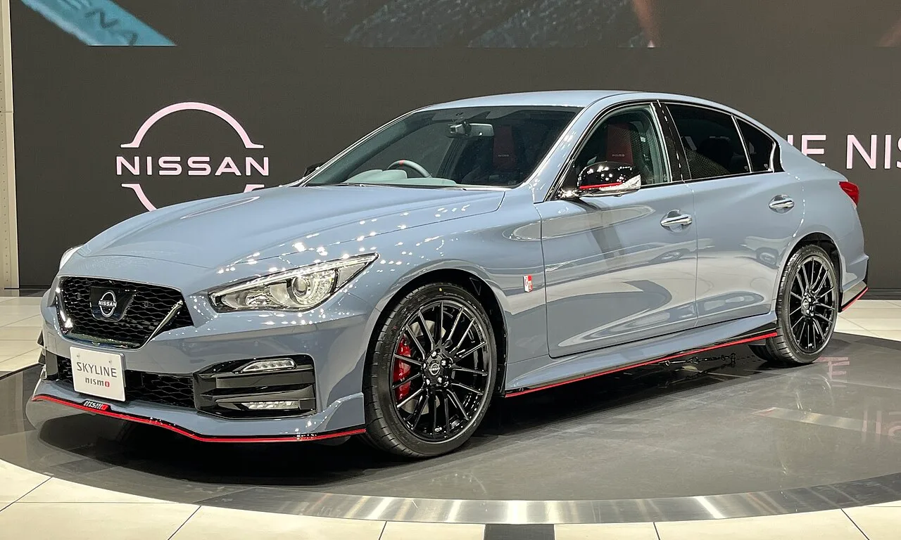
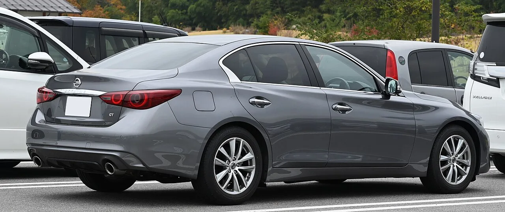
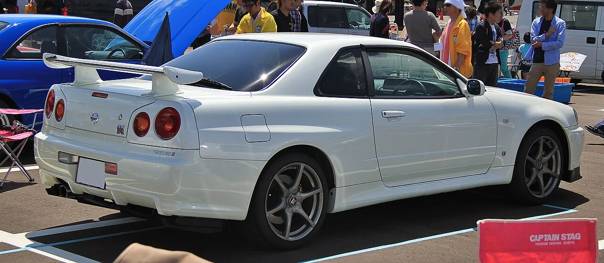
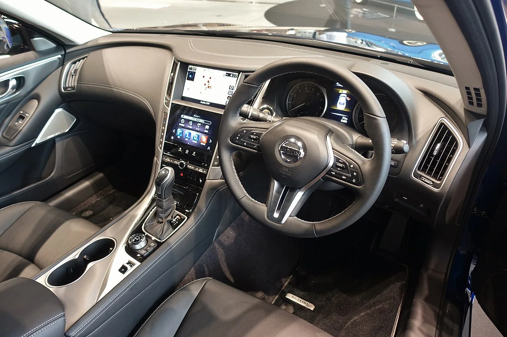

▲ 현행 13세대 닛산 스카이라인(V37). 신형 14세대는 이 모델을 대체하며 2026년 12월 공식 데뷔한다 ⓒ Tokumeigakarinoaoshima, Wikimedia Commons (CC BY-SA 4.0)
순수 개발 기간이 절반 이하로 줄었다. 이번엔 AI가 만들어낸 결과다.
닛산이 14세대 스카이라인(코드명 R36)의 공식 데뷔 시점을 2026년 12월로 확정했다. 이반 에스피노사 닛산 사장 겸 CEO가 일본 아사히신문과의 인터뷰에서 직접 밝힌 내용이다. 앞서 지난 4월 티저를 통해 신형 스카이라인의 존재를 처음 알린 지 약 8개월 만에 정식 데뷔 일정이 나왔다. 이번 발표에서 가장 눈에 띄는 대목은 출시일 자체보다 개발 방식이다. 생성형 AI와 디지털 시뮬레이션 기술을 설계부터 생산까지 전 공정에 투입해, 통상 4년 이상 걸리던 개발 기간을 26개월로 단축했다는 것이다.
1. 12월 데뷔 확정 — 에스피노사 CEO가 직접 밝힌 일정
신형 스카이라인의 데뷔 시점을 공개한 건 다름 아닌 닛산의 최고경영자다. 이반 에스피노사 사장 겸 CEO는 아사히신문과의 인터뷰에서 "2026년 12월"을 신형 스카이라인의 공식 데뷔 시점으로 못박았다. 그는 이 프로젝트를 "도전적인 프로젝트"라 표현하며, 짧은 개발 기간 안에 완성도를 끌어올린 것이 "닛산의 엔지니어링 역량을 증명하는 사례"라고 평가했다.
외신에 따르면 에스피노사 CEO는 신형 스카이라인을 두고 "닛산 르네상스를 상징하는 아이콘 중 하나이자, 우리가 준비해온 컴백의 상징"이라고도 언급했다. 실적 부진과 구조조정을 겪어온 닛산이 브랜드 재건의 구심점으로 스카이라인을 내세우고 있다는 뜻으로 읽힌다. 신형 스카이라인은 지난 4월 처음 티저 이미지로 공개된 바 있으며, 이번 발표로 약 8개월 만에 구체적인 데뷔 시점이 확정됐다.
📍 '스카이라인 R36' 코드명, 정확히는 어떤 뜻인가
닛산 세단 스카이라인은 2001년 GT-R과 계보가 갈라진 뒤 V35·V36·V37로 이어져 왔고, 'R'로 시작하는 코드명(R32~R34, 그리고 뒤이을 R35·R36)은 원래 스카이라인에서 독립한 별도 차종인 GT-R 전용으로 쓰여왔다. 카스쿠프스·오토에볼루션 등 해외 매체들은 이번 신형 세단을 'R36'이 아닌 '14세대 스카이라인'으로 지칭하며, 차세대 GT-R(R36)은 이와 별개로 하이브리드 파워트레인을 얹고 2028년 이후 공개될 예정이라고 보도했다. 다만 국내에서는 신형 스카이라인을 편의상 'R36'으로 부르는 경우가 많아, 이 기사에서도 관례를 따르되 공식 코드명은 아직 닛산이 밝히지 않았다는 점을 짚어둔다.

▲ 닛산 전시장의 현행 13세대 스카이라인(V37). 신형은 이 모델의 완전변경 후속작이다 ⓒ Tokumeigakarinoaoshima, Wikimedia Commons (CC BY-SA 4.0)
2. 개발 기간 55개월 → 26개월 — AI가 만든 절반의 마법
13세대 스카이라인(V37) 개발에는 약 55개월이 걸렸다. 반면 14세대는 26개월 만에 양산 개발을 마쳤다는 게 닛산 측 설명이다. 단순히 시간을 줄인 게 아니라, 개발 방식 자체를 바꿨다는 점이 눈에 띈다. 닛산은 생성형 AI와 디지털 시뮬레이션 기술을 디자인 구상, 엔지니어링, 주행 테스트, 생산 공정 설계에 이르는 전 과정에 적용했다고 밝혔다.
| 구분 | 13세대(V37) | 14세대(R36) |
|---|---|---|
| 개발 기간 | 약 55개월 | 약 26개월 |
| 개발 방식 | 전통적 실물 시제품·물리 테스트 중심 | 생성형 AI·디지털 시뮬레이션 전 공정 활용 |
| 적용 범위 | - | 디자인, 엔지니어링, 주행 테스트, 생산 공정 설계 |
업계에서는 이런 개발 방식이 단순히 이번 스카이라인 한 대에 그치지 않고, 자금 여력이 넉넉하지 않은 상황에서도 신차 개발 속도를 유지해야 하는 닛산의 중장기 개발 전략의 시험대가 될 것으로 보고 있다. 실물 시제품 제작과 물리적 주행 테스트에 들어가는 시간과 비용을 디지털 시뮬레이션으로 상당 부분 대체할 수 있다면, 향후 다른 차종 개발에도 같은 방식이 확대 적용될 가능성이 크다.
3. 파워트레인 — 400마력급 트윈터보 V6에 수동변속기까지?
아직 닛산이 파워트레인을 공식 확정 발표하지는 않았다. 다만 국내외 복수 매체는 3.0리터 V6 트윈터보 엔진(400마력 이상)과 6단 수동변속기 조합이 유력하다고 보도했다. 이는 현재 스카이라인 400R과 닛산 Z에 탑재되는 VR30DDTT 계열 엔진과 궤를 같이하는 수치다. 구동 방식은 스카이라인의 정체성인 후륜구동(RWD)을 유지할 전망이다.
| 항목 | 전망 내용 |
|---|---|
| 엔진 | 3.0L V6 트윈터보, 최고출력 400마력 이상 |
| 변속기 | 6단 수동변속기(니스모 등 고성능 트림 유력), 일반 트림은 자동변속기 병행 가능성 |
| 구동방식 | 후륜구동(RWD) 기본 |
| 추가 가능성 | 하이브리드 파워트레인 병행 탑재설도 제기 |
📍 수동변속기, 왜 화제인가
최근 세단·스포츠세단 시장에서 수동변속기 옵션은 사실상 멸종 위기에 놓여 있다. 그런 흐름 속에 400마력급 후륜구동 스포츠 세단에 6단 수동변속기를 유지한다면, 스카이라인은 몇 안 남은 '드라이버스 카' 계보를 잇는 상징적 모델이 될 수 있다. 해외 매체 디 오토피안(The Autopian)은 닛산 경영진이 2024년 12월 수동변속기 옵션 존재 자체는 공식 인정했지만, 실제 판매 비중은 전체의 약 10% 안팎에 그칠 것이라는 업계 전망도 함께 전했다. 다만 세부 사양은 아직 닛산의 공식 발표가 아닌 외신 보도·업계 전망 단계라는 점은 감안할 필요가 있다.

▲ 닛산 VR30DDTT 3.0L V6 트윈터보 엔진 전시 모델. 스카이라인 400R과 닛산 Z에 탑재되는 이 계열 엔진이 신형에도 이어질 것으로 전망된다 ⓒ TTTNIS, Wikimedia Commons (CC BY-SA 4.0)

▲ 현행 스카이라인 니스모(V37) 트림. 신형 6단 수동변속기는 이런 고성능 니스모급 트림에 우선 탑재될 것으로 전망된다 ⓒ Kazyakuruma, Wikimedia Commons (CC0)
4. 디자인 — 하코스카 오마주 전면부, GT-R 계보의 테일램프
지난 4월 공개된 티저 이미지를 분석한 외신들은 신형 스카이라인의 디자인 방향을 복고와 계승으로 요약한다. 전면부는 1968년 하코스카(C10) 세대에서 영감을 받은 슬림한 그릴과 한층 날카로워진 헤드램프가 특징이다. 옆면은 부풀린 펜더 라인으로 근육질 실루엣을 강조했고, 전체적으로는 세단 특유의 "클래식 3박스" 형태를 유지한다.
후면 디자인은 스카이라인의 형제차 격인 GT-R의 유산을 짙게 반영했다. 원형 4등식 LED 테일램프 그래픽은 R34·R35 GT-R의 정통성을 계승했다는 평가를 받으며, 테일램프 클러스터 형태 자체는 R30·R31 세대 스카이라인에서 따왔다는 분석도 나온다. 여기에 투톤 마감을 더해 복고적 감성을 강화했다는 게 외신들의 공통된 해석이다.

▲ 현행 스카이라인(V37) 후면부. 신형은 이보다 더 GT-R에 가까운 원형 4등식 테일램프 그래픽을 적용한 것으로 전해진다 ⓒ TTTNIS, Wikimedia Commons (CC BY-SA 4.0)

▲ 원형 4등식 테일램프의 원조 격인 스카이라인 GT-R R34. 신형 스카이라인이 오마주하는 디자인 요소가 바로 이 램프 그래픽이다 ⓒ TTTNIS, Wikimedia Commons (CC0)
신형 스카이라인의 티저 이미지와 디자인 분석 기사는 카스쿠프스(Carscoops)에서 확인할 수 있다. 관련 보도 바로가기
5. 생산지와 글로벌 판매 — 도치기 공장, 북미는 인피니티로
신형 스카이라인은 일본 도치기(Tochigi) 공장에서 전량 생산될 예정이다. 도치기 공장은 닛산의 스포츠카 페어레이디 Z를 생산하는 곳으로, 최근 닛산 내 고성능·프리미엄 모델 전용 생산 거점으로 성격이 재편되고 있다. 스카이라인이 이 라인에서 생산된다는 것은 닛산이 이 차종을 볼륨 모델이 아닌 브랜드 플래그십급 상징 모델로 취급하고 있음을 보여주는 대목이다.
✅ 북미 시장에서는 어떻게 팔릴까
· 현행 13세대(V37) 스카이라인은 일본 내수용 이름이며, 북미에서는 인피니티 Q50이라는 이름으로 판매되고 있다
· 신형 14세대 역시 같은 전략을 이어갈 가능성이 높다는 게 외신들의 공통된 전망이다
· 다만 북미형 모델명이나 구체적인 사양 차이는 아직 닛산이 공식화하지 않았다

▲ 현행 스카이라인(V37) 실내. 신형 인테리어는 아직 공식 공개되지 않았다 ⓒ TTTNIS, Wikimedia Commons (CC BY-SA 4.0)
6. 요약
닛산 이반 에스피노사 CEO가 14세대 스카이라인(R36)의 공식 데뷔 시점을 2026년 12월로 확정 발표했다. 가장 큰 화제는 개발 방식이다. 13세대 개발에 55개월이 걸린 것과 달리, 14세대는 생성형 AI와 디지털 시뮬레이션을 디자인부터 생산까지 전 공정에 적용해 26개월 만에 양산 개발을 완료했다.
파워트레인은 아직 공식 확정되지 않았지만, 400마력 이상의 3.0L V6 트윈터보 엔진과 6단 수동변속기 조합이 유력하게 거론된다. 디자인은 하코스카를 오마주한 전면부와 GT-R 계보를 잇는 원형 테일램프가 특징이며, 생산은 페어레이디 Z와 같은 일본 도치기 공장에서 이뤄질 예정이다.
13세대가 북미에서 인피니티 Q50으로 판매됐던 전례를 감안하면, 14세대 역시 유사한 글로벌 판매 전략을 이어갈 가능성이 크다. 다만 북미형 모델명과 구체적인 사양은 아직 공식화되지 않아, 12월 데뷔 이후 추가 발표를 지켜볼 필요가 있다.